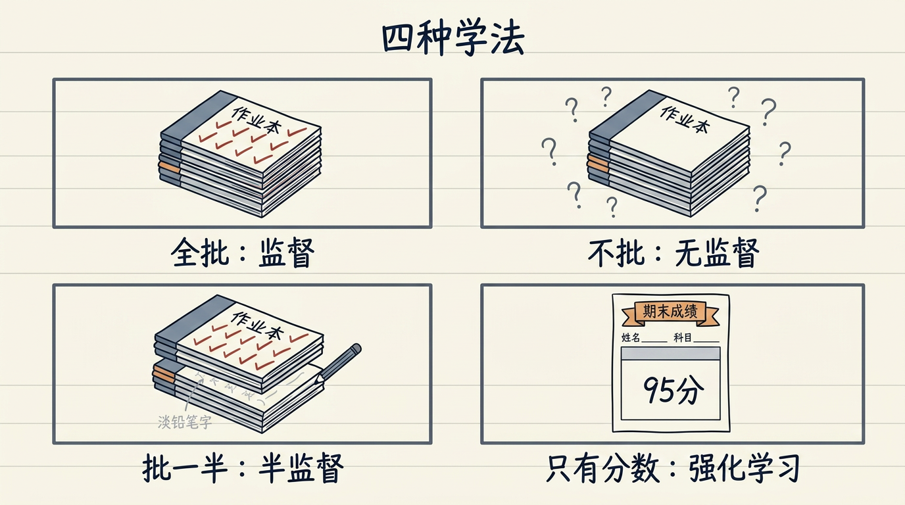
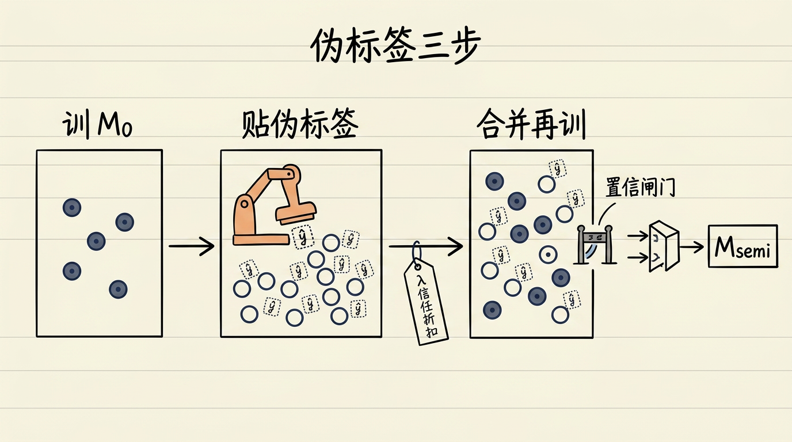
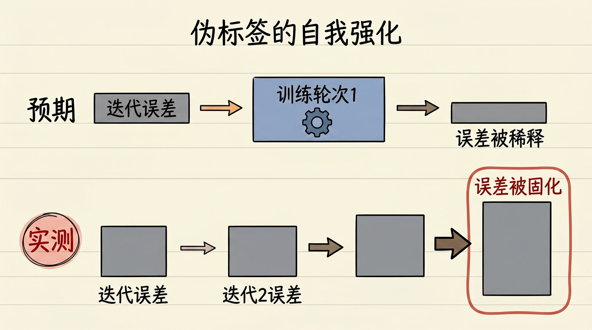
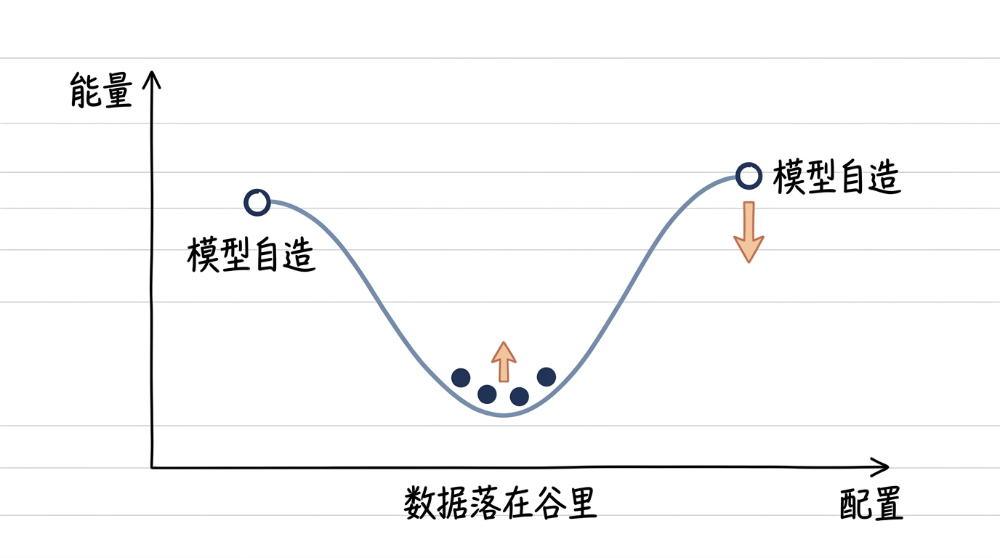
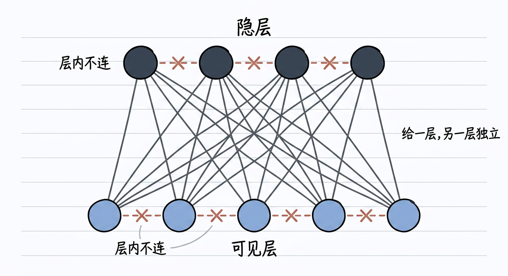
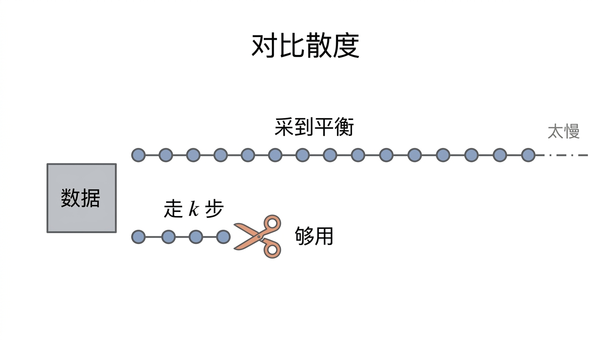
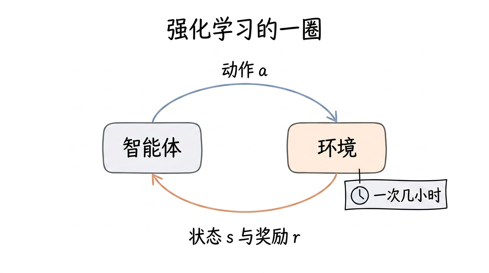
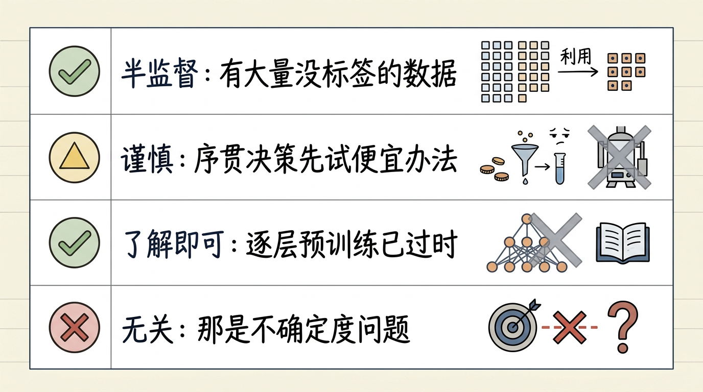
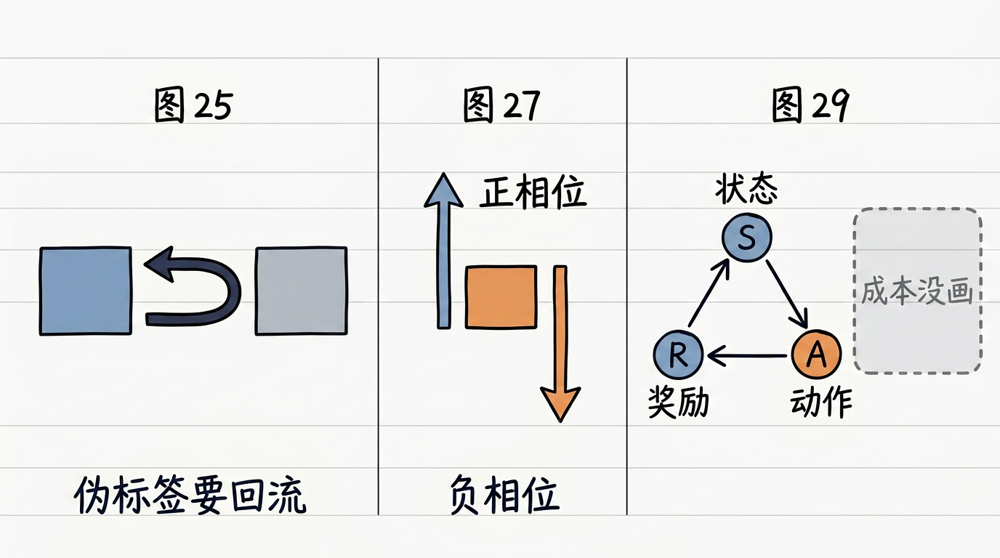
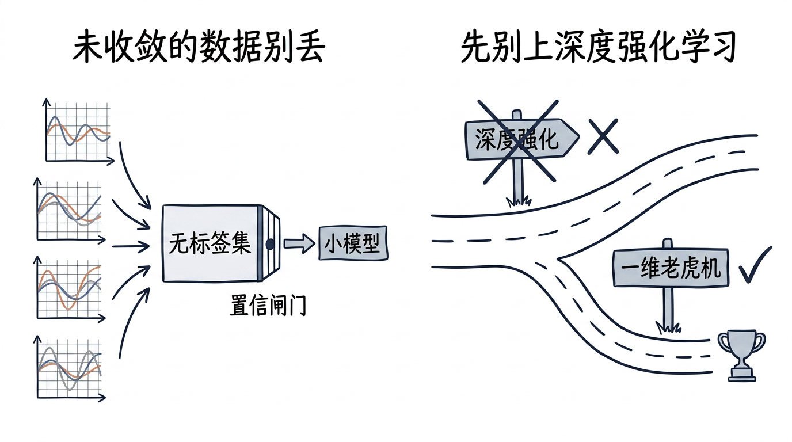

画风基准：第零章 ch0v2_s3_two_routes_zh.png 与 ch0v2_s3_blind_search_timeline_zh.png。
判定：中文有没有糊、一图是否只讲一义、有没有混入装饰性 Emoji、和基准画风是否一致。
 §3 引子 s1一摞作业的四种批法：全批、不批、批一半、只有期末分 |
 §5(a) s3伪标签三步：训 M0、贴伪标签、合并再训，中间挂着 λ 与置信闸门 |
 §5(a) 打脸 s3预期误差被稀释，实测误差被固化并逐轮放大（须含“预期/实测”字样） |
 §5(b) s3数据配置落在能量谷底，模型自造的配置被压向高处 |
 §5(b) s3两层全连、层内不连：给定一层，另一层各神经元条件独立 |
 §5(b) s3对比散度：长链采到平衡太慢，走 k 步就够用 |
 §5(c) s3智能体与环境的一圈：动作出去，状态与奖励回来，一格就是几小时 |
 §6 s6四行决策卡：该用、谨慎、了解即可、与本讲无关 |
 §7 s7三张图的读法提示：回流线、正负相位、缺成本标注 |
 §10 s10左：未收敛数据别丢，过闸门再做伪标签；右：先走一维 bandit |